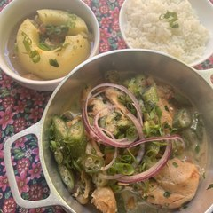
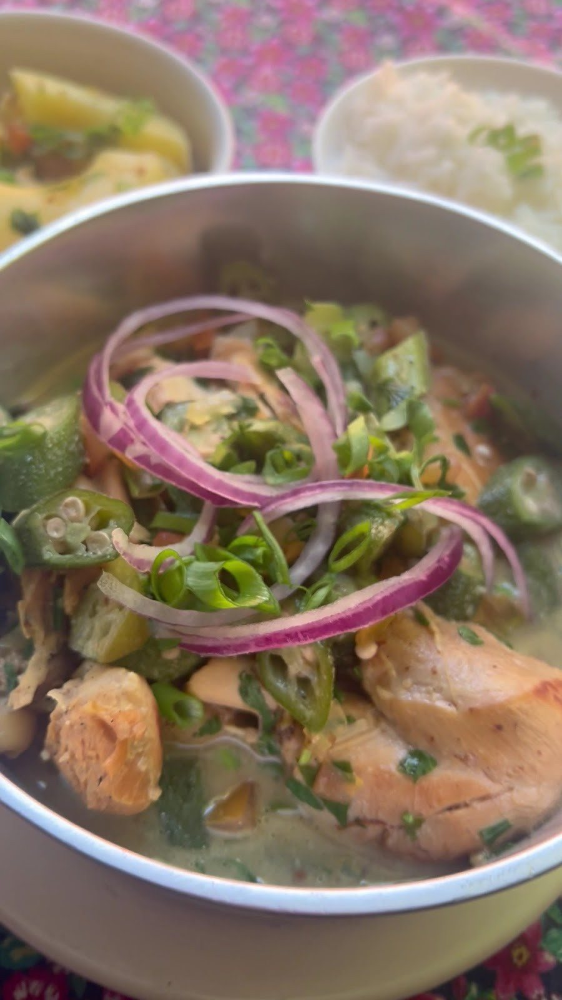
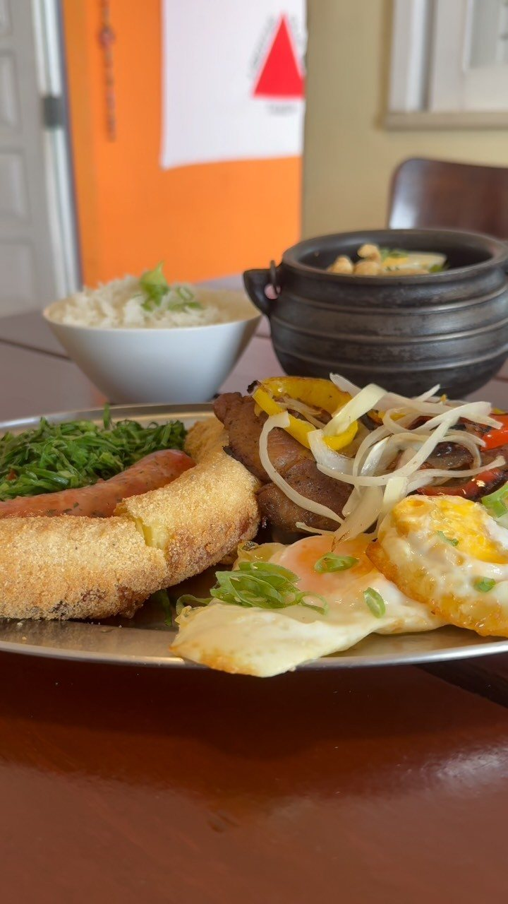
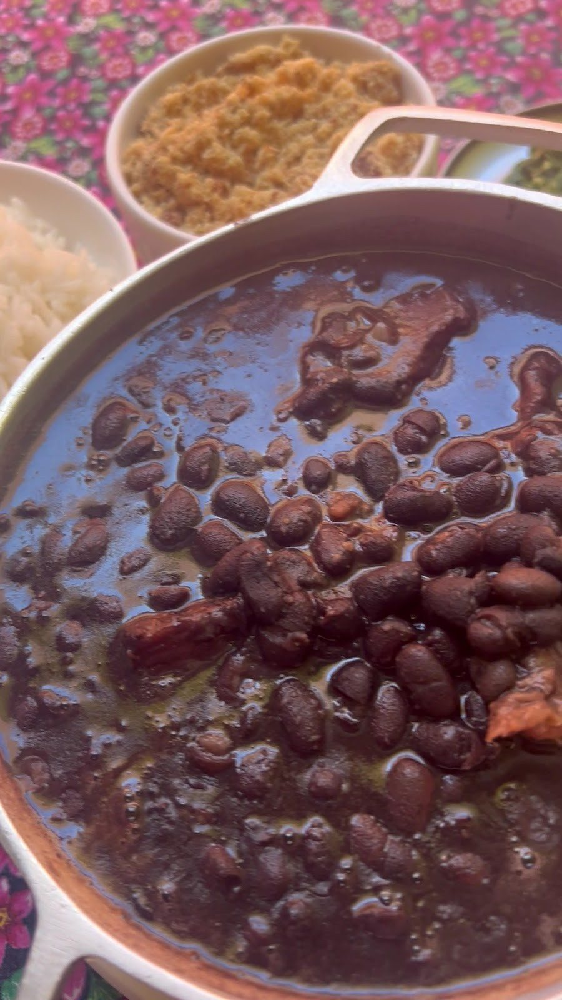
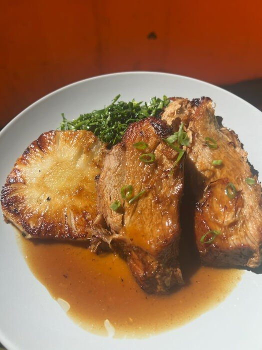

Galinha Caipira
“Comida de panela, feita com calma e com aquele gostinho de casa.” Serve 3 pessoas: tradicional, ensopada ou ao molho pardo.
Início · Cada dia, um sabor
“A semana já tem sabor de Minas!” A casa abre de quarta a domingo, e cada dia tem um prato anunciado no Instagram.

A folhinha
“Comida de panela, feita com calma e com aquele gostinho de casa.” Serve 3 pessoas: tradicional, ensopada ou ao molho pardo.
“Bife de porco, linguiça mineira, ovo frito, banana-da-terra, couve, arroz temperadinho e tutu.”
“Daquelas que reúnem a mesa e fazem a conversa durar mais um pouquinho.”
Costela de ripa bovina ao forno, pernil suíno ao molho de rapadura flambado na cachaça, frango com quiabo.
Segunda e terça, a casa fica fechada, segundo a ficha do Google. Os pratos do dia não têm preço publicado: pergunte no salão ou pelo WhatsApp.
Quarta-feira
“Nossa Galinha Caipira é preparada com muito carinho e serve 3 pessoas. Você pode escolher entre a versão tradicional, ensopada, ou ao molho pardo”Instagram @taiobha, 02/09/2026

Quinta-feira
“QUINTA tem Virado Paulista — bife de porco, linguiça mineira, ovo frito, banana-da-terra, couve, arroz temperadinho e tutu.”Instagram @taiobha, 21/09/2026

Sexta-feira
“Sextou do jeitim que a gente gosta: com uma feijoada mineira bem caprichada”Instagram @taiobha, 14/08/2026
No cardápio de todo dia, a Feijoada Mineira Completa P/2 pessoas sai a R$ 156,20, com “Carnes e Ingredientes Especiais Vindos de Minas Gerais”.

Sábado e domingo
“Pernil Suíno ao Forno — Assado no capricho, acompanhado de abacaxi caramelizado, redução de rapadura com cachaça, arroz branco e aquele feijão tropeiro mineiro”Instagram @taiobha, 11/09/2026

Dúvidas frequentes
A semana publicada em 21/09/2026 é esta. Na dúvida, confirme pelo WhatsApp antes de sair.
O preço não está nas legendas: “consulte” no salão ou pelo WhatsApp.
Use o “Avise que vem” e diga o prato que não quer perder; a casa responde.
Uai, sô
Almoço de quarta a domingo, na casa de fachada laranja da Pituba. Avise que vem pelo WhatsApp e a casa responde.